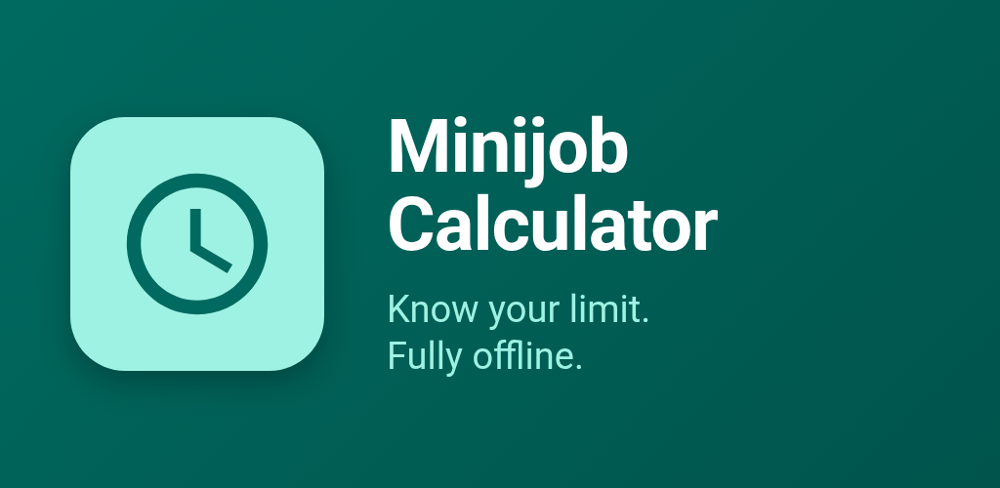
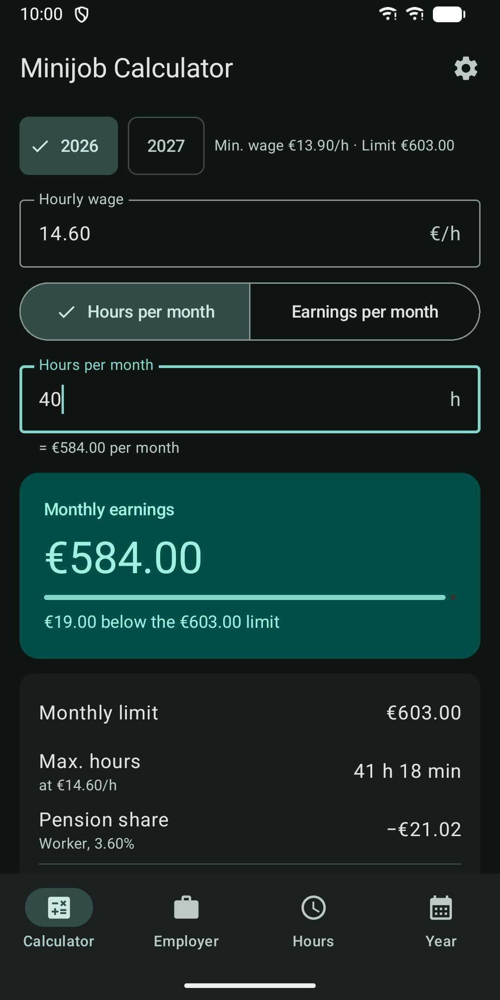
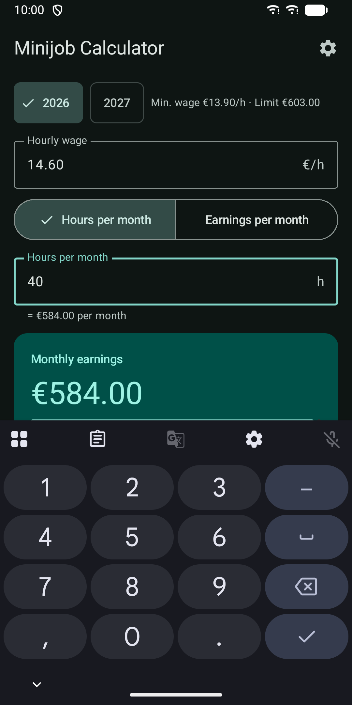
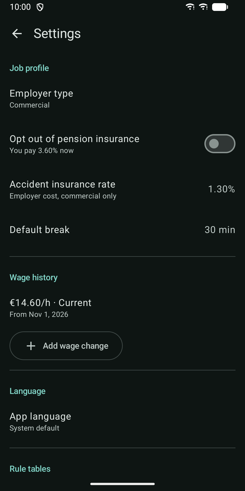
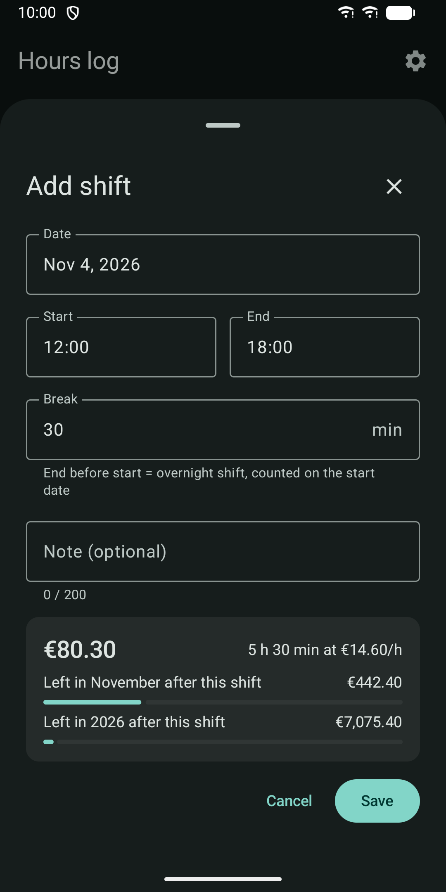
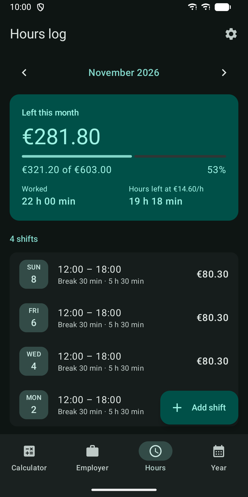
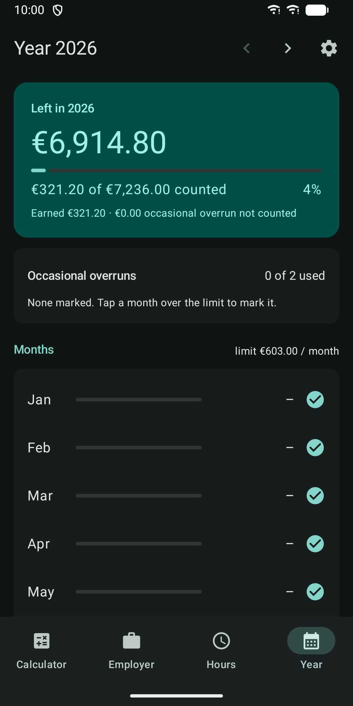

Minijob Calculator Offline
German Minijob limit, hours and employer cost 2026/2027. Offline, no account.







About
How much can I earn in my Minijob? How many hours can I work? What does it cost my employer? Minijob Calculator answers these questions with the German rules for 2026 and 2027, fully offline. Worker calculator • 2026 earnings limit: 603 € a month, 7,236 € a year (2027 provisional: 633 € a month) • Enter your hourly wage and either hours or earnings per month; the other value is worked out for you • Maximum hours at your hourly wage • Pension share (3.6% with a commercial employer, 13.6% in a private household) and your net pay • See what changes if you opt out of pension insurance • Warnings when the wage is below the minimum wage or earnings move into the Midijob range Employer cost • Commercial employer or private household (Haushaltsscheck) • Every levy on its own line: pension, health, flat-rate tax, U1, U2, insolvency levy and accident insurance • Total monthly cost of the Minijob Hours log • Shifts with date, start, end and break, overnight shifts included • Money and hours left this month, updated as you add shifts • Warning before a shift breaks the monthly or yearly limit • Wage changes over time are applied to the right shifts Year overview • Year total against the yearly limit, month by month • Mark up to 2 occasional overruns per year, as the rules allow Widget • Money left this month and this year on your home screen; tap it to open the hours log Your data stays with you • No internet permission, no account, no ads, no tracking • Your data is not in Google cloud backup; it moves to a new phone only by device-to-device transfer • Light and dark theme, German and English, phone and tablet layouts, screen reader support Note: all results are estimates, not tax or legal advice. The 2027 values are provisional until officially confirmed and are updated through app releases.